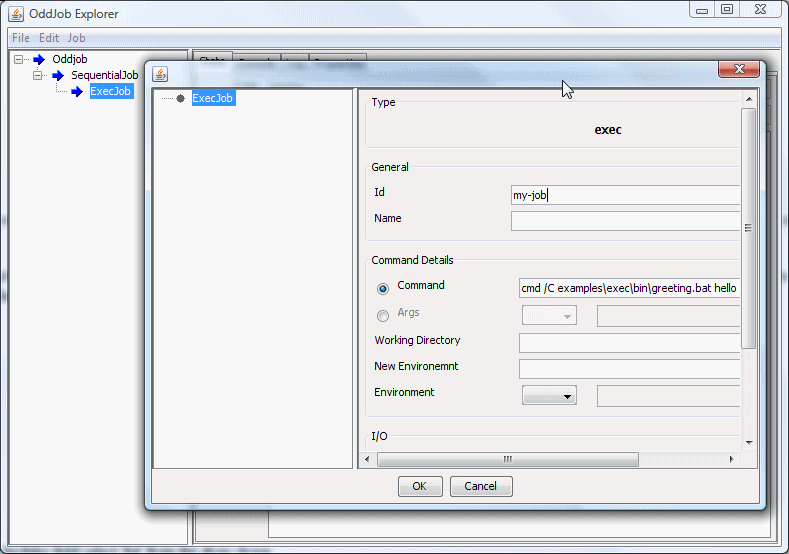
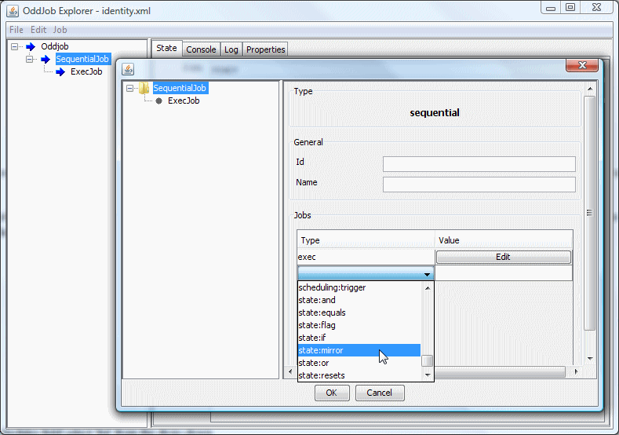
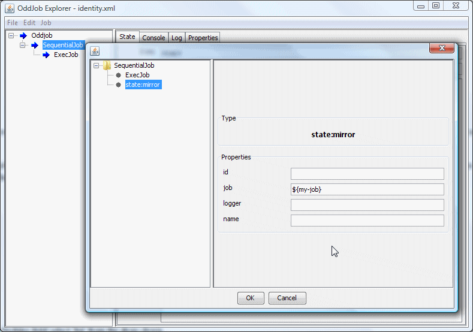
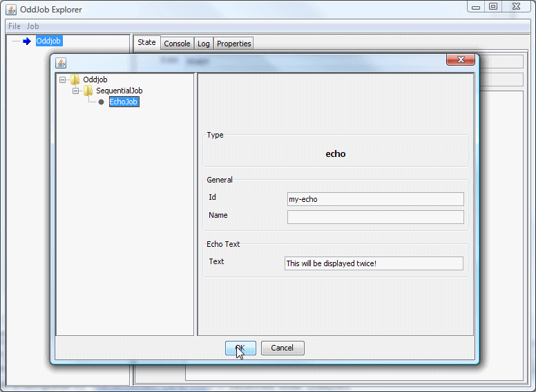
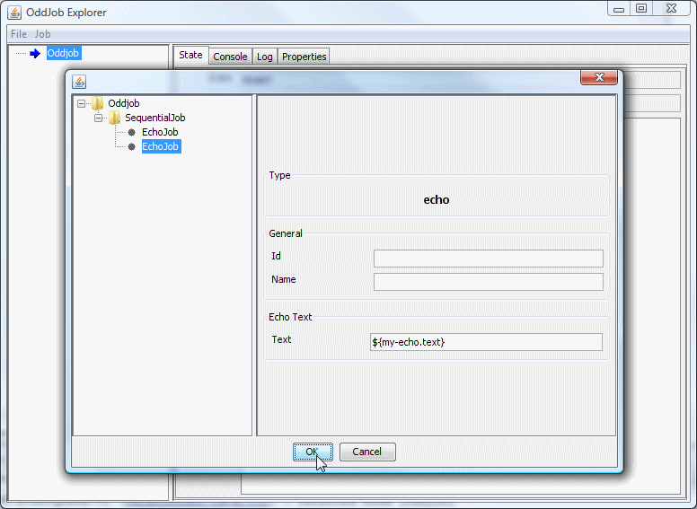
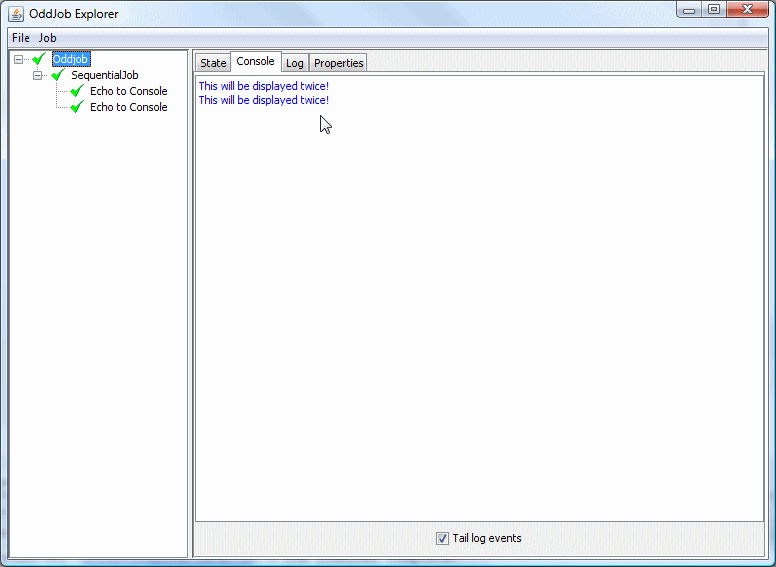
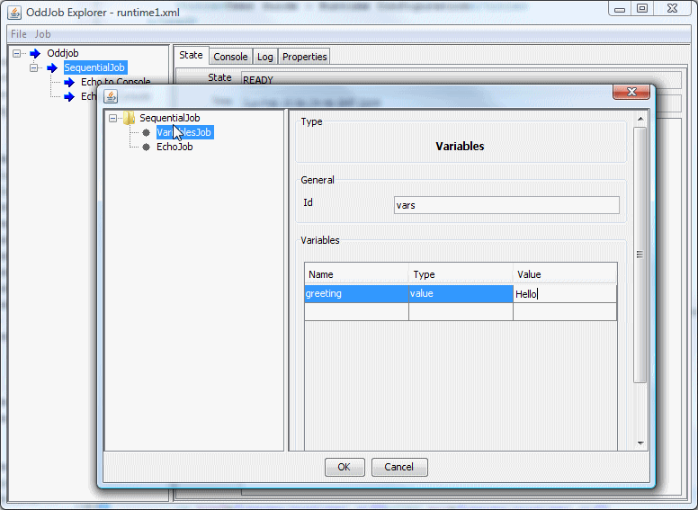

Using Properties to configure jobs and passing information between jobs.
Often we only know configuration values when the jobs run. A file name might contain a date, an FTP host name might change with environment, etc. Oddjob allows us to specify configuration that is evaluated only when the job runs. The configuration values are either Java properties, (key/value pairs) or properties of other jobs.
To specify that a configuration value should be evaluated at runtime we use syntax of the form ${expression} for simple property evaluation or #{expression} for script evaluation.
For instance echo job could be configured with the text property Hello ${someone.name}
To evaluate name Oddjob first checks for a java property called 'someone.name', and then looks for another job with an id of 'someone' and a property 'name'.
Properties are defined within an Oddjob configuration using the properties job. When the job runs, the properties it defines become available to other jobs. When the property job is reset or deleted, the property definitions are removed and are no longer available to configure other jobs.
Properties can also be defined outside Oddjob and inherited. The ways in which Oddjob can inherit properties are:
oddjob.properties
in the users home directory.If a property of the same name is defined twice the value of when it was set first set is used instead of the value defined later. This means that external properties take precedence over internal properties. The order of precedence of external properties is as they are listed above.
If a property is not defined as a name value pair, then Oddjob will attempt to evaluate the configuration expression as a property of job.
In order to identify a job so that it may be referenced from another job
it must be given an 'id'. An id must be unique and must not contain the
characters .()[]. or /.
To demonstrate using a job's id we'll create a job that mirrors the state of our ExecJob.
We'll start with our Exec Job as the only child of a Sequential Job.
We need to give our Exec Job an id which is quite simple. Open it in Designer and in the id field on the right enter 'my-job'.
Next we need to add a mirror job. In the jobs list of the Sequential Job, add a state:mirror job.
Select the new node and in the job field we need to tell it the job to mirror. We do this using the notation ${job-id} in the configuration field. Oddjob will recognise a ${ } character sequence and takes what is between the curly brackets to be the id of job we wish to reference. This happens every time the mirror job is run.
So in the 'Job' field enter the text ${my-job}.
Run the sequence, and then reset and run just the Exec Job. You Should see that the mirror job mirrors its state.
The configuration settings made in Oddjob Designer set what are known as the job's properties. The 'Command' field of the ExecJob set a property called 'command'.
Just as you can reference a job in the configuration file, you can also reference a property of a job. The notation for accessing a property is ${job-id.job-property}.
As an example let's create a new simple configuration. In Oddjob Explorer select New from the File menu. Set a sequential job as Oddjob's only job, and then add an echo job to it. Set the id of the job to "my-echo" and the 'Text' field (or 'text' property) to "This will be displayed twice!".
Add another echo job to the SequentialJob node but in this echo jobs text property enter the value ${my-echo.text}.
Save the configuration and then run the Oddjob job. The jobs will run immediately and in the console you should see that the text has been displayed twice.
When setting the text property of the second job, Oddjob looked up the job with the id of 'my-echo' and then looked up the property 'text' of that job.
This substitution is the first thing that happens when a job is run. Altering the order of the jobs in the example would be OK because the fixed text of the first job is set when the job is loaded. Adding a third job to run before the other two which relied on the second jobs text property wouldn't work because the second job hadn't run and therefore hadn't had its text property set. Adding the third job after the first two would be OK.
Oddjob supports more complicated property specifications but for most simple situations ${id.property} is all that is needed.
Most jobs have a fixed properties with names that never change, the variables job has properties which are defined dynamically at runtime.
This is useful for defining something that is more than text that is shared between several jobs such as a files list or an SQL connection. Text properties are still better set with the properties
As an example we'll replace our first echo job in the previous example with a variables job. Delete the first echo job. Select the 'SequentialJob' and add a new variables job Jobs table. The variables job appears at the end of the list which isn't very useful because as its properties are created when it runs so we need it to run first. Use the mouse to drag the Variables job above the Echo job. Now configure the variables job by giving it an 'Id', say 'vars' and in the Named Values section select a type of 'value', and enter a name of 'greeting' and then enter 'Hello' in the value cell.
We have created a variables job that has property called 'greeting' that will be available when the job runs.
We need to change our runtime property in the echo job to match our new configuration i.e. ${vars.greeting}. We can then click OK to take our new configuration back into Oddjob Explorer and when we run the Sequential job we will see in the console output 'Hello'
The name attribute of job is a special case. It is evaluated when configuration is loaded, not when the job is run. This is because name is used by jobs in the UI to identify them. Try changing the name of an echo job to Echo for ${user.name} and see what happens.
The main use case for this is actually driven by the foreach Job. Check out the examples there to understand why.
Expressions of the form #{expression} are passed to Java's internal scripting engine. Not all versions of Java have one. Try setting the text of Echo job to 2 + 2 is #{2 + 2} and running it to see if you have one.
If the above fails, then you can download the Nashorn jar and drop it in Oddjob's lib
directory. Scripting is quite advanced, you probably won't need it, so more on this is beyond the
scope this manual.
As you saw in the examples, an Oddjob job can be nested within another Oddjob job. It is possible to access a job within the using the notation ${oddjob-id/job-id.property} but more on this in the next section.